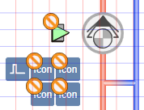
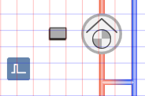
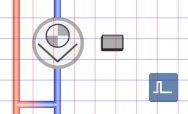
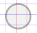
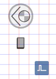
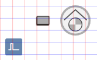
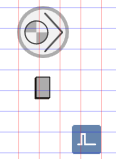
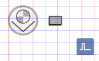

Adding a Pump
In Desigo CC, there is a default pump for all geographical directions, standards, and technical versions. After adding the graphic, the default pump is configured as per project requirements.
- In the Mode group, conduct one of the following actions:
- Click Design
 . Previously rotated objects appear in the default direction.
. Previously rotated objects appear in the default direction. - (Optional) Click Test
 . In this case, the pump does not display in its true size.
. In this case, the pump does not display in its true size. - In System Browser, select logical view.
- Select Logical > [Network name] \...\ [Plant] >
- [PreHcl (preheater)] > [Pu (Pump)]
- [PreHcl (reheater)] > [Pu (Pump)]
- [Ccl (cooling coils)] > [Pu (Pump)]
- [Hum (humidifier)] > [Pu (Pump)]
- Drag the object to the graphics page.
- The added object displays at the maximum scale. This ensures that the next object does not overlap

.

NOTE:
Drag-and-drop only works if a function is assigned to the corresponding object after data import.
You can check the object data on each symbol.
Rotating
- The fan symbol is added to the graphic.
- In the Mode group, click Test.
- The pump symbol displays as per the important data points and default direction

. - Select the pump symbol.
- Left-click and hold, then right-click until the pump symbol displays in the desired direction.
- Release the left mouse button.
- The pump symbol

is displayed in the desired direction.
Pump Direction | ||||
Direct Entry of Direction under Symbol Properties > Substitution > Direction | ||||
0 | 1 | 2 | 3 | 4 |
 |  |  |  |  |
NOTE:
In drawing mode, the pump is always displayed in the default state.
Changing the Default
- The fan symbol is added to the graphic.
- In the View tab, select Properties.
- The Symbol Properties dialog box is enabled.
- In the Mode group, click Test.
- The pump symbol displays as per the important data points and the selected direction .
- Select the pump symbol.
- Select Symbol Properties > Substitutions.
- In the Style field, enter a number between 0 and 2 (see Table Define Pump Style).
- Click ENTER or change to another entry field to activate the change.
Define Pump Style | ||
default | Variants | Swedish/Finnish |
0 | 1 | 2 |
NOTE:
In drawing mode, the pump is always displayed in the default state.